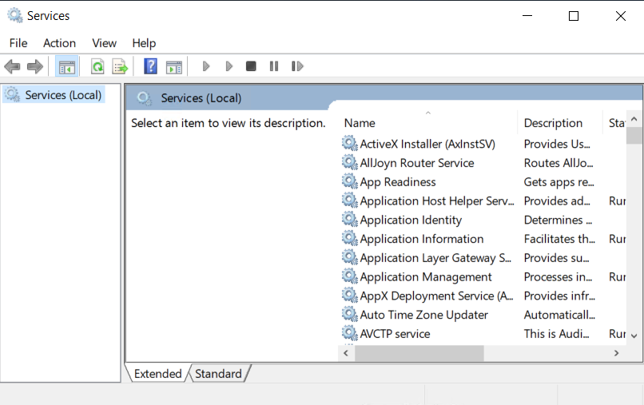

|
IdentityGuard Server 13.0 Administration Guide |
|
IdentityGuard Server 13.0 Administration Guide |
You can set the Entrust IdentityGuard Radius proxy to start automatically when you reboot your server.
If the Radius proxy service is set to be started manually, you must restart it after restarting the computer that hosts the service or after installing a patch.
To enable or disable automatic startup of the Radius proxy on Linux
1. Log in to the Entrust IdentityGuard server as root.
2. Navigate to the $IG_HOME/bin directory.
3. Enter one of the following commands:
● To enable the Radius proxy to automatically start when the server starts, enter:
./igsvvconfig.sh igradius enable
The Entrust IdentityGuard Radius proxy will start every time the computer reboots.
● To prevent the Radius proxy from starting automatically when the server starts, enter:
./igsvvconfig.sh igradius disable
You must start the Entrust IdentityGuard Radius proxy manually.
To enable or disable automatic startup of the Radius proxy on Windows
1. Click the Windows button, then click and select Services from the list of tools.
The Services window appears.

2. In the alphabetical list of services, right-click Entrust IdentityGuard Radius Proxy and select Properties.
3. On the General tab, from the Startup type drop-down list, select the startup type you want:
● To enable the Radius proxy to start automatically when the server starts, select Automatic.
● To prevent the Radius proxy from starting automatically when the server starts, select Manual.
4. Click OK to save the change.